For the assignment we were given 3 grayscale images of B G and R channels, and had to combine them to get colored image. For my approach I took the first image as
stationary and alligned other two channels to it. I used euclidean distance as my metric,
so I took the sum of square differences between pixels of two images. I would cut off 15% of both sides from the image to account for the borders, then shift images from -18 to 17 and look at the value of the metric, then take the offset with smallest distance between images.
This worked well enough except for few images. For example emir and church did not allign well. This was because if you match on raw pixels you are not matching on brigtness - you are matching on different color channels.
In church image there is a lot of water with blue color, so red channel which does not represent it can't match well with other images. In emir image, the emir's clothing is colorful,
thus making it hard for R G and B channels to match using it.
So to fix those images I created a new metric and instead of taking difference between raw pixels, I ran the image through Canny edge detection algorithm.
Now the difference was taken from edges and results aligned better. The results with this method are good on every picture, and only on 1 or 2 pictures they are worse than with the first metric(for example train, or three generations).
To increase the speed of my program I implemented image pyramid: image gets rescaled to be 2 times smaller at most 8 times, and then I search for best fit offset on that level,
the found location gets multiplied by 2 and is passed on to the next level, where the process is continued untill the top level. To increase the speed even further,
the search region is decreased by 1 with each pyramid level. So I start searching from -18 to 17, then -17 to 16 on the next level, and so on.
Generated images
Images created using regular metric.
Images created using Canny edge detection.
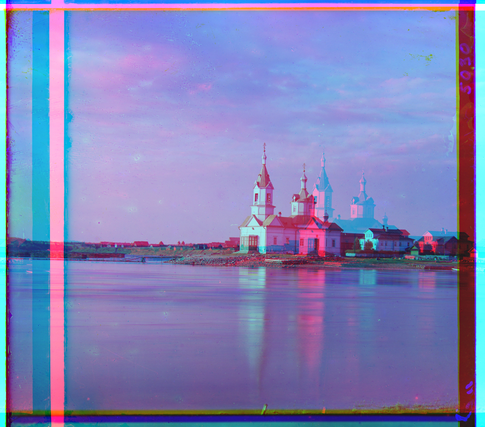
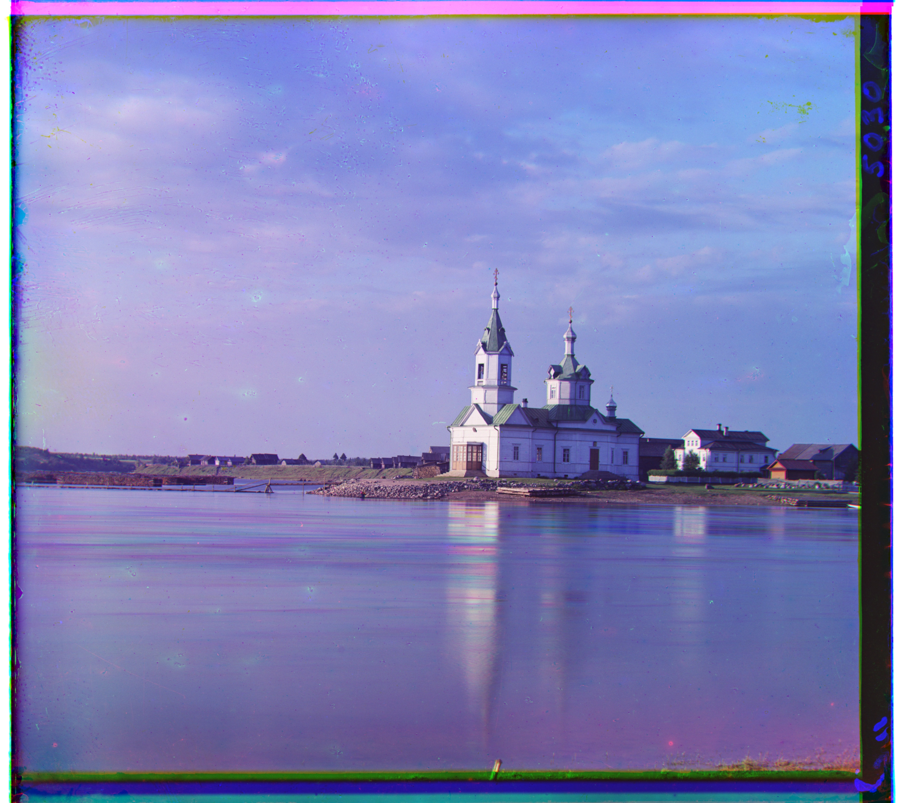
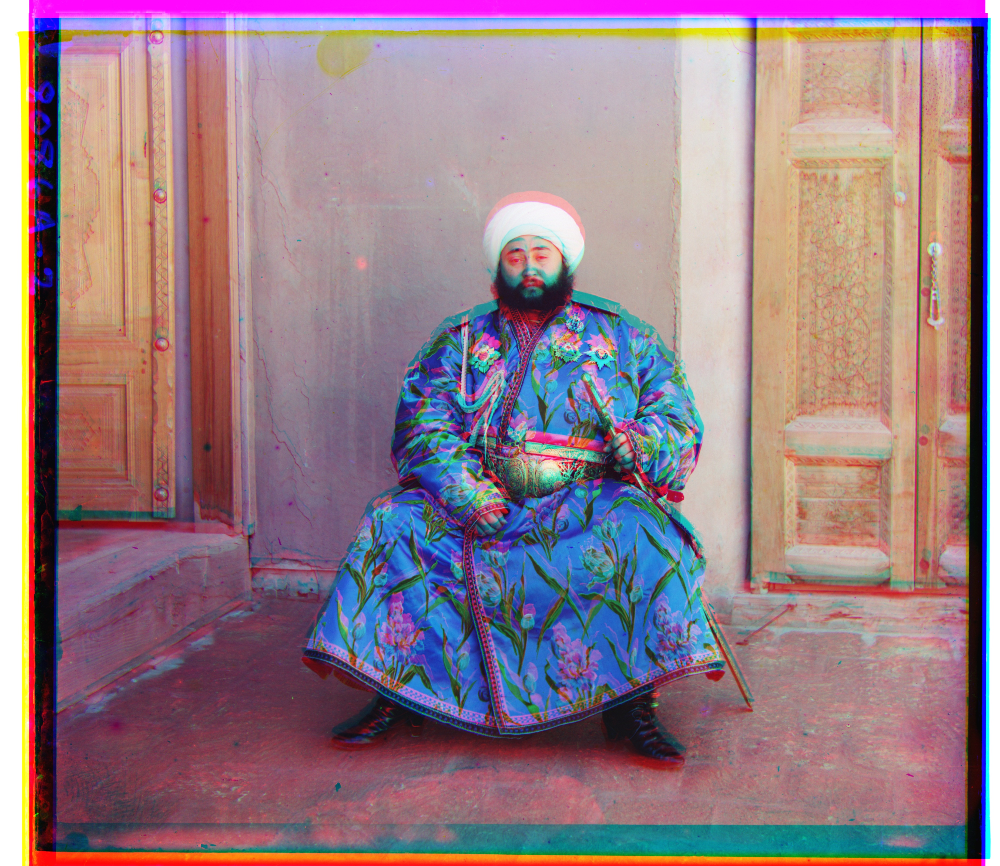
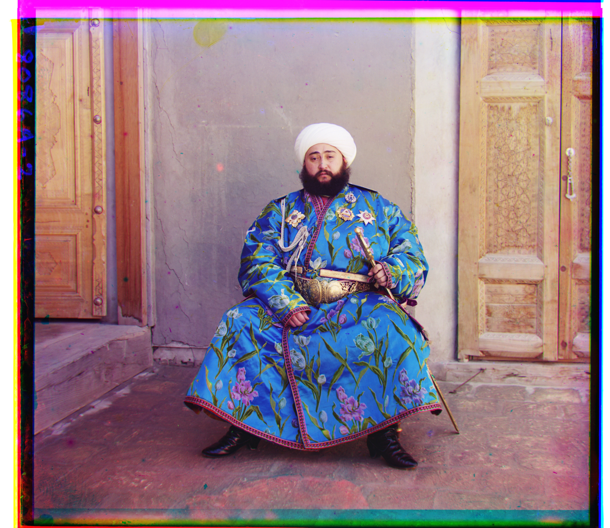
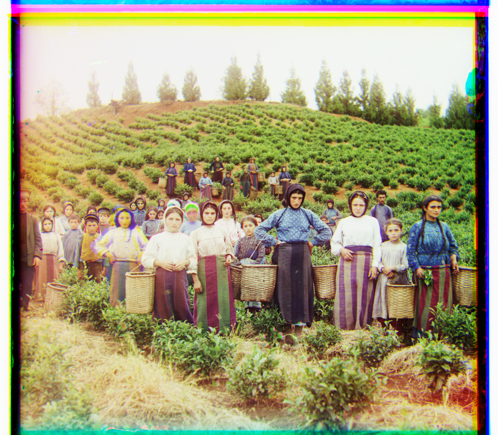
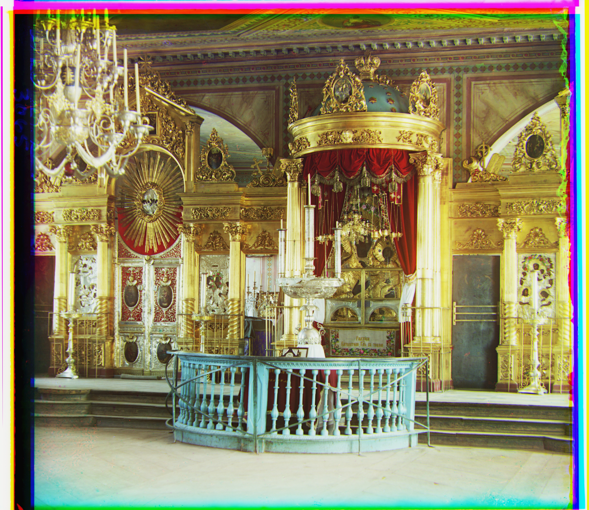
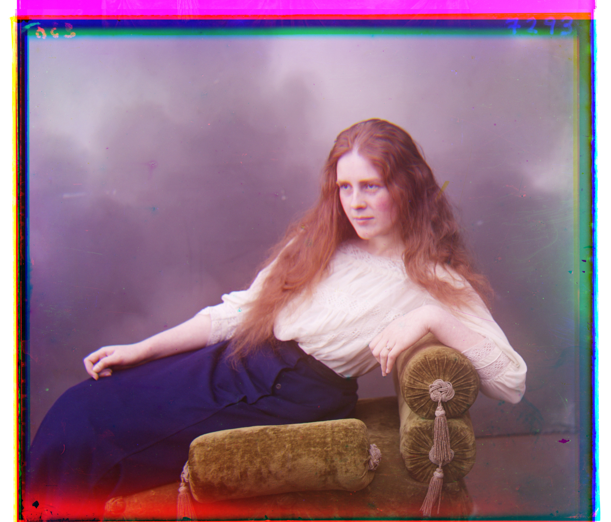
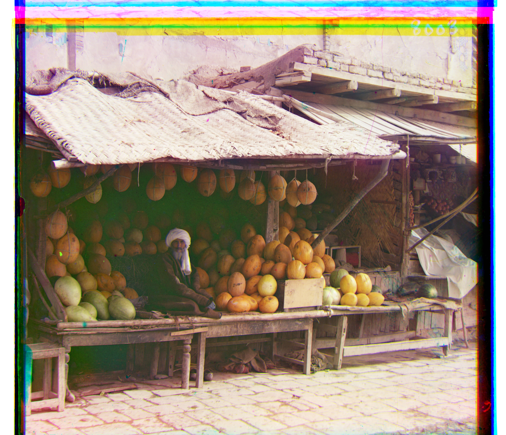
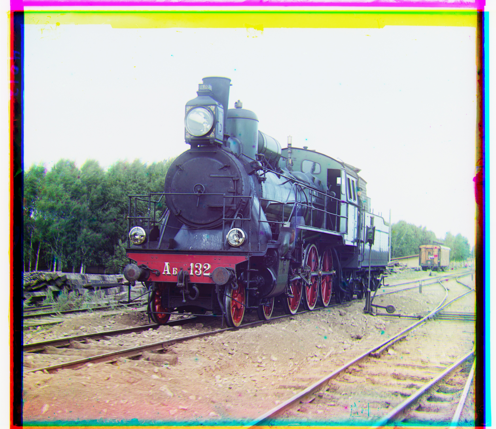
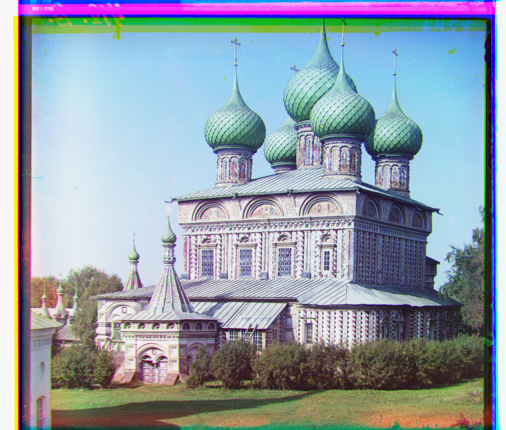
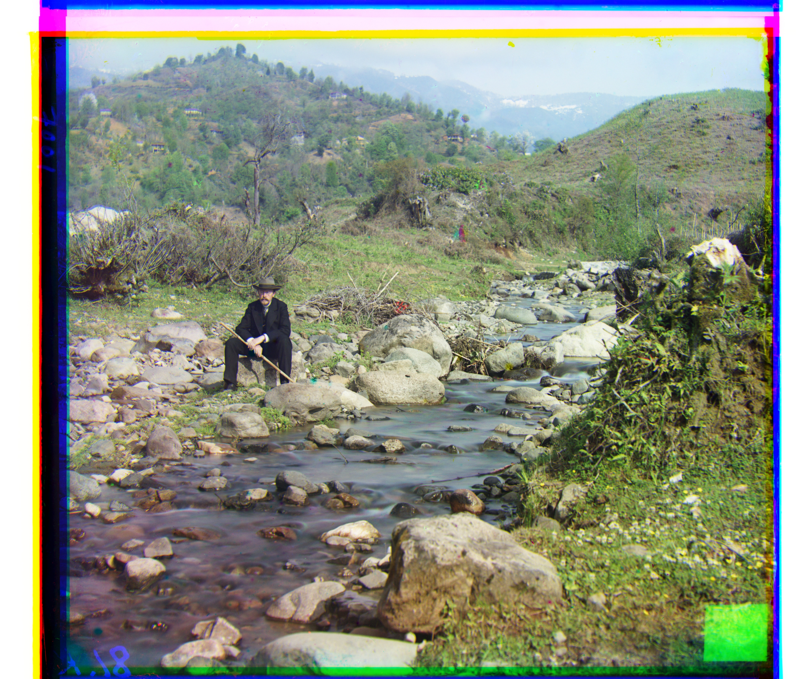
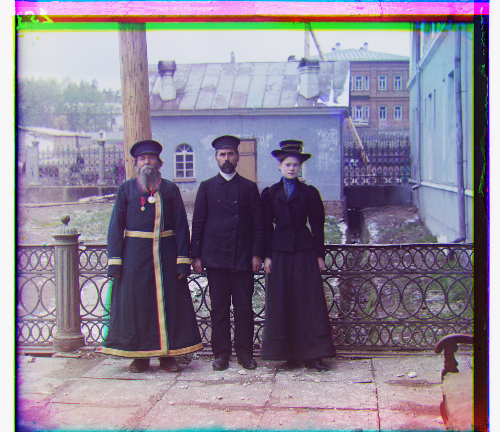